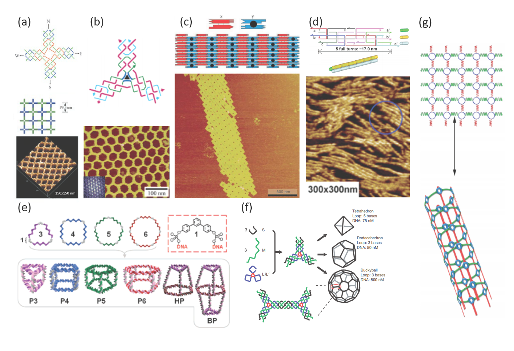
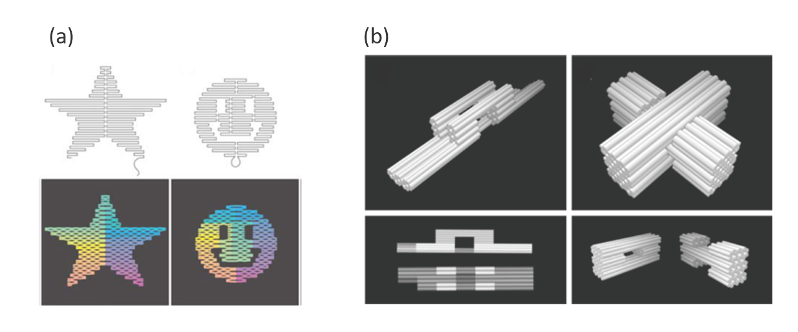
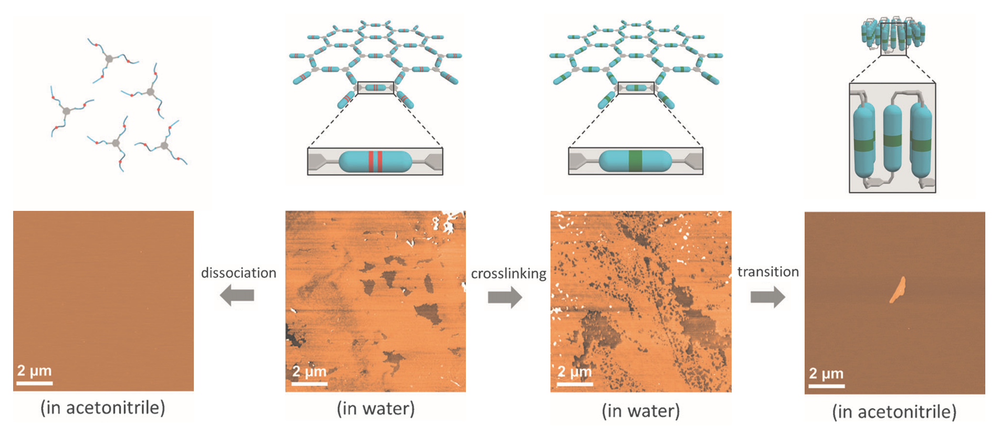
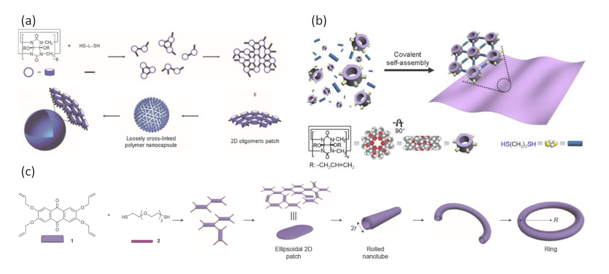
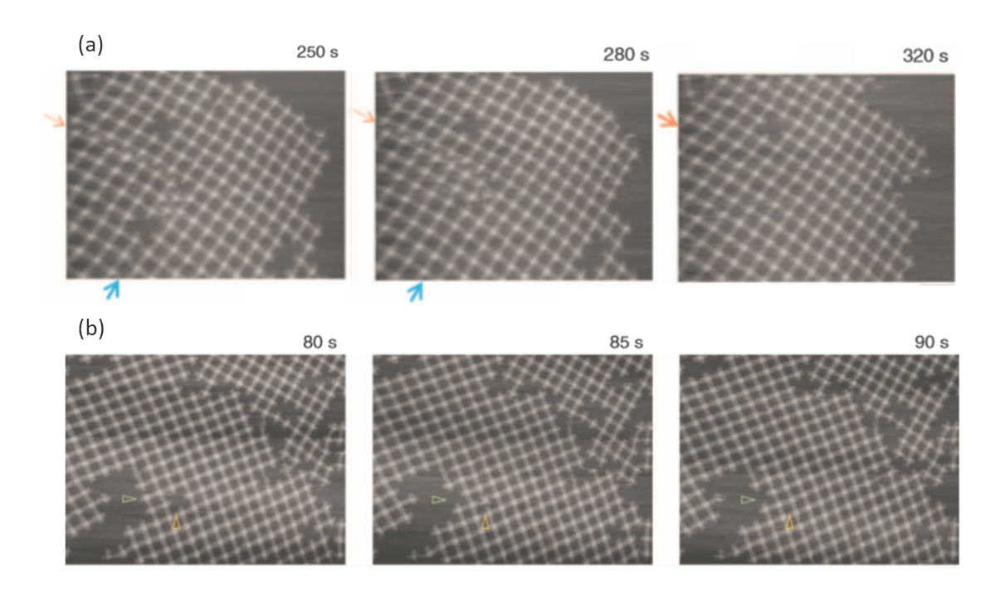
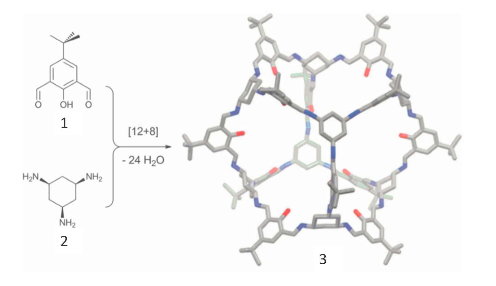
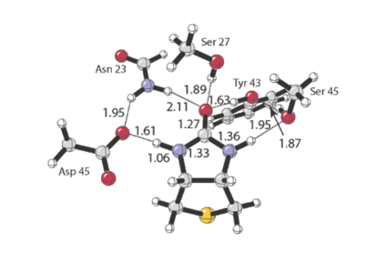
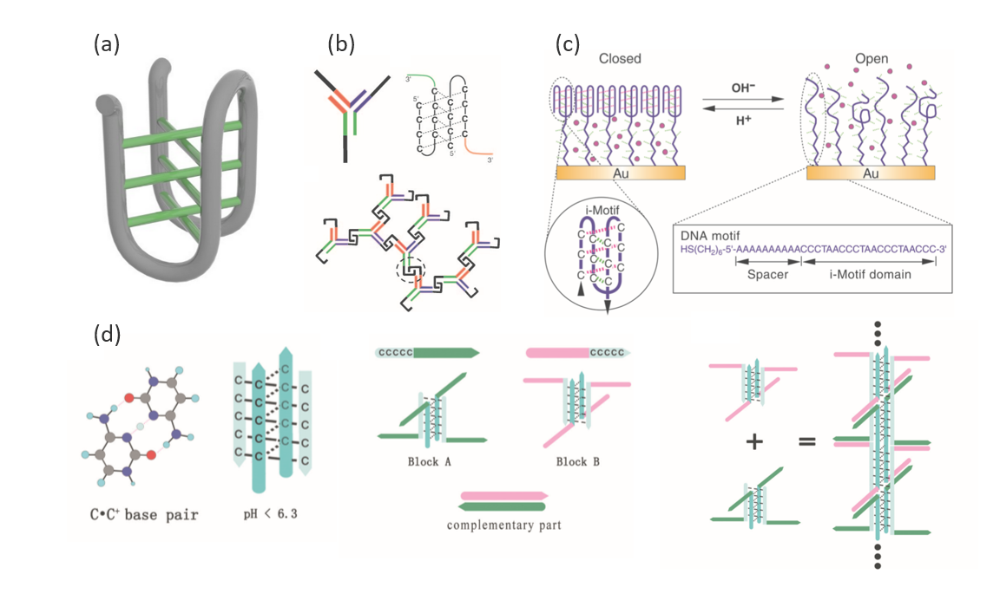

Over the past decades, DNA’s sophisticated structure involving strict complementary base pairing has compelled an influx of scientists to participate in designing diverse DNA-based nanostructures. DNA has served as an excellent building material in versatile and state-of-the-art multidimensional nanostructures as a result of its sequence, programmability, accurate self-recognition, and instinct biocompatibility. Sticky-ended cohesion, cross-over junctions and blunt end stacking are predominantly adopted in constructing DNA-based structures. The representative examples of structural DNA nanotechnology include the formation of two-dimensional structures such as polygonal lattices1,2,periodic arrays3 and helix bundles4,and three-dimension structures like prisms5, polyhedrons6 and nanotubes7. (Figure 1).Moreover, DNA origami is especially worth mentioning as it contributes to the fabrication of many sophisticated nanoscale structures through staples fixing scaffold8,9. (Figure 2)

Figure 1. Examples of multi-dimensional DNA structures. (a) A two-dimension lattice assembled from cross-shaped DNAs tailed with four unpaired sticky ends. Adapted from ref 1. (b) A three-point-star DNA tile composed of three red strands, three blue strands, and one green-dark blue strand assemble into hexagonal lattices via complementary sticky ends. Adapted from ref 2. (c) A two-dimensional array containing two double-crossover molecules, X and Y. Molecule Y has an extra double-helical domain (black). The structure is formed through the cohesion of sticky ends. Adapted from ref 3. (d) Linear or 2D arrays assembled from three-helix bundle DNAs. The three helix DNAs are associated with crossover junctions. Adapted from ref 4. (e) Various discrete three-dimension DNA prisms including triangular P3, cubic P4, pentameric P5, and hexameric P6 prisms generated by a series of single-strands and cyclic DNAs with organic vertices. Adapted from ref 5. (f) Tetrahedron, dodecahedron, and buckyball fabricated from three-point-star DNA tiles. The three branches of one tile associated with those of other tiles to form the edges of the polyhedrons. Adapted from ref 6. (g) A DNA-based nanotube formed through orthogonal stepwise crosslinking. The circular DNA functionalized with amino and thiol (blue) reacts with bis-amide-modified (green) and bis-thiol-modified (red) DNA strands, respectively. Adapted from ref 7.

Figure 2. Examples of DNA origami in nanoscale structures. (a) A long single-stranded DNA folds into desired shapes, and different sets of the “staple” strands favor the construction of these well-designed shapes such as star and smiley face. Adapted from ref 8. (b) Honeycomb-pleated DNA origami in the deliberately designed shape of railed bridge and slotted cross, formed by folding a viral DNA strand. Adapted from ref 9.
Considering its meticulous base pairing, DNA tends to self-assemble with high quality (e.g.: multilayer DNA origami can be made with high strand integration quality up to 99%.)10.Meanwhile, due to the non-covalent interactions between building blocks of DNA self-assembly, the defect which occurs during the assembly process can be filled to form the most stable conformation11. (Figure 3) These advantages result in the formation of the aforementioned predictable and well-defined structures.

Figure 3. HS-AFM visualized (a) the self-error-correction and (b) the defects filling of DNA supramolecular structures. Adapted from ref 11.
Despite the advantages of DNA nanotechnology, there remain a few challenges not limited to the high temperature needed in DNA hybridization, and the vulnerability of hydrogen bonds in DNA structures. Hybridization of single-stranded DNAs is typically used in the assembly of such structures, which requires denaturation at 95°C and long-time annealing. This excessively high temperature is fatal to some active molecules or enzymes, which are sometimes needed to co-assemble with the single-stranded DNAs in order to be loaded onto the surface or trapped inside. This indicates the difficulty of functionalization of the nanostructures. Thus, the applications of DNA nanostructures formed through hybridization are to some extent restricted. Drug delivery, for example, is hardly feasible in such systems, as drug molecules are often vulnerable at high temperature (e.g. Artemether and dihydroartemisinin were found to be very heat sensitive and began to decompose even at 60°C)12.
Another limitation of such systems lies in their unstability, as is demonstrated by Robert Häner et. al. in their report13.(Figure 4) Supramolecular structures might disassemble at the change of solvent polarity. Considering the weak and reversible nature of base-pairing interactions utilized to hold the structure, they are often not robust enough to be useful in practical application14.

Figure 4. The thin sheets formed by hybridization of self-complementary tris-oligonucleotides disassembled when dissociated and dissolved in acetonitrile, while the covalently crosslinked sheets underwent transition into thick pads under the same condition, demonstrated by AFM. Adapted from ref 13.
Recently, the work of Kim et. al. provided an alternative method of synthesizing nanostructures for better stability which does not entail high temperature(ref 14). Their team proposed a novel method to construct well-defined nanostructures through self-assembly using an irreversible covalent bond, without the aid of preorganization or templates. A wide variety of nanostructures with different levels of dimensions and complexity has been synthesized, including polymer nanocapsules15,2D polymers16, nanotubes, and microring17s.

Figure 5. Formation mechanism of (a) the polymer nanocapsule (adapted from ref 15) (b) the 2D polymer (adapted from ref 16) and (c) the nanotube and microrings (adapted from ref 17).
Compared with non-covalent self-assembly, using irreversible covalent bond does have some shortcomings. Since “self-error-correcting” is disabled, mistakenly formed bonds could not be corrected, which consequently leads to hyper branching or defects in nanostructures. Despite that, this approach produces nanostructures of much more stability, enabling them to be applied to more areas.
Using reversible covalent reactions (e.g. imine condensation, aldol reactions, and cycloadditions) might be another approach to generate nanostructures. By introducing dynamic covalent chemistry (DCC), chemists have already obtained cages at the molecular scale in good yields from rather simple precursors18. (Figure 6) However, utilizing reversible covalent reactions to construct structures at nano-scale has been rarely reported.

Figure 6. A molecular cage 3 was formed from simple precursors 1 and 2, through reversible imine condensation reaction. Adapted from ref 18.
The reversible covalent reaction might be a compromise of the two above, as it combines the error-correction capability of supramolecular chemistry and the robustness of covalent bonding19. This feature might help generate a nanostructure that is thermodynamically stable, and in the meantime robust enough to be put into applications, especially targeted drug delivery. In this case, there are still two more steps before practical application: target recognition and controlled release.
Biotin-avidin interaction might be able to solve the former problem. Biotin is widely applied to biosystems as a small molecule that has a strong interaction with streptavidin, characterized by a formation (affinity) constant of （10^13）L/mo20l. Utilizing ureido moiety of biotin hydrogen bonding to five residues of streptavidin21(Figure 7), Nina Dassinger et. al. reported the immobilization of Concanavalin onto solid surfaces modified with biotin via a Concanavalin A–Streptavidin fusion protein22; Nicolas Aubrey et. al. reported the recognition of a scorpion toxin through a scFv /streptavidin-binding peptide fusion protein23. Besides, biotin’s exclusive characteristics enable biotin-avidin interaction to be widely used as an ideal general bridge system20. First, Biotin is a small molecule (244.31 Da) which does not typically affect the biological activity of biologically active macromolecules. Furthermore, biotinylating becomes much easier due to the commercially available reagents and well-established procedures.

Figure 7. The hydrogen bonds between biotin and five residues of streptavidin. Adapted from ref 21.
I-motif structures might be able to solve the latter problem. i-motif structures, which are generally formed at slightly acidic pH, consist of two parallel-stranded C: C+ hemi-protonated base-paired duplexes24. The hydrogen bonds between two parallel strands insert antiparallel to each other to form four-stranded structures. I-motif structures are particularly amenable to widespread applications which need a response to environment25-27. (Figure 8)

Figure 8. (a) The 3D structure of i-motif, hydrogen bonds between C: C+ marked in green. (b) Principle structure of a DNA hydrogel made through the three-dimensional assembly of the Y units. Two black domains from neighboring DNA Y units form an i-motif to cross-link adjacent Y units. Adapted from ref 25. (c) Working principle of the switching DNA nanocontainer. The four-stranded i-motif structures formed at pH 4.5 block the small molecules marked in purple. They transform into single strands at pH 8 and become loose enough to allow free diffusion, Adapted from ref 26. (d) Model of the DNA self-assembly process, via the formation of i-motif. Adapted from ref 27.
The comprehensive study on the aforementioned served as a source of inspiration for our design.
References
1. Yan, H.; Park, S. H.; Finkelstein, G.; Reif, J. H.; LaBean, T. H., DNA-templated self-assembly of protein arrays and highly conductive nanowires. Science 2003, 301 (5641), 1882-1884.
2. He, Y.; Chen, Y.; Liu, H.; Ribbe, A. E.; Mao, C., Self-Assembly of Hexagonal DNA Two-Dimensional (2D) Arrays. Journal of the American Chemical Society 2005, 127 (35), 12202-12203.
3. Liu, W.; Zhong, H.; Wang, R.; Seeman, N. C., Crystalline two-dimensional DNA-origami arrays. Angewandte Chemie 2011, 50 (1), 264-267.
4. Park, S. H.; Barish, R.; Li, H.; Reif, J. H.; Finkelstein, G.; Yan, H.; LaBean, T. H., Three-Helix Bundle DNA Tiles Self-Assemble into 2D Lattice or 1D Templates for Silver Nanowires. Nano letters 2005, 2005 (4), 693-696.
5. Aldaye, F. A.; Sleiman, H. F., Modular Access to Structurally Switchable 3D Discrete DNA Assemblies. Journal of the American Chemical Society 2007, 129 (44), 13376-13377.
6. He, Y.; Ye, T.; Su, M.; Zhang, C.; Ribbe, A. E.; Jiang, W.; Mao, C., Hierarchical self-assembly of DNA into symmetric supramolecular polyhedra. Nature 2008, 452 (7184), 198-201.
7. Wilner, O. I.; Henning, A.; Shlyahovsky, B.; Willner, I., Covalently linked DNA nanotubes. Nano letters 2010, 10 (4), 1458-1465.
8. Rothemund, P. W., Folding DNA to create nanoscale shapes and patterns. Nature 2006, 440 (7082), 297-302.
9. Douglas, S. M.; Dietz, H.; Liedl, T.; Hogberg, B.; Graf, F.; Shih, W. M., Self-assembly of DNA into nanoscale three-dimensional shapes. Nature 2009, 459 (7245), 414-418.
10. Wagenbauer, K. F.; Wachauf, C. H.; Dietz, H., Quantifying quality in DNA self-assembly. Nature communications 2014, 5, 3691.
11. Suzuki, Y.; Endo, M.; Sugiyama, H., Lipid-bilayer-assisted two-dimensional self-assembly of DNA origami nanostructures. Nature communications 2015, 6, 8052.
12. Blessborn, D.; Skold, K.; Zeeberg, D.; Kaewkhao, K.; Skold, O.; Ahnoff, M., Heat stabilization of blood spot samples for determination of metabolically unstable drug compounds Bioanalysis 2013, 5 (1), 31-39.
13. Yu, H.; Alexander, D. T. L.; Aschauer, U.; Haner, R., Synthesis of Responsive Two-Dimensional Polymers via Self-Assembled DNA Networks. Angewandte Chemie 2017, 56 (18), 5040-5044
14. Baek, K.; Hwang, I.; Roy, I.; Shetty, D.; Kim, K., Self-assembly of nanostructured materials through irreversible covalent bond formation. Accounts of chemical research 2015, 48 (8), 2221-2229.
15. Kim, D.; Kim, E.; Kim, J.; Park, K. M.; Baek, K.; Jung, M.; Ko, Y. H.; Sung, W.; Kim, H. S.; Suh, J. H.; Park, C. G.; Na, O. S.; Lee, D. K.; Lee, K. E.; Han, S. S.; Kim, K., Direct synthesis of polymer nanocapsules with a noncovalently tailorable surface. Angewandte Chemie 2007, 46 (19), 3471-3474.
16. Baek, K.; Yun, G.; Kim, Y.; Kim, D.; Hota, R.; Hwang, I.; Xu, D.; Ko, Y. H.; Gu, G. H.; Suh, J. H.; Park, C. G.; Sung, B. J.; Kim, K., Free-standing, single-monomer-thick two-dimensional polymers through covalent self-assembly in solution. Journal of the American Chemical Society 2013, 135 (17), 6523-6528.
17. Lee, J.; Baek, K.; Kim, M.; Yun, G.; Ko, Y. H.; Lee, N. S.; Hwang, I.; Kim, J.; Natarajan, R.; Park, C. G.; Sung, W.; Kim, K., Hollow nanotubular toroidal polymer microrings. Nature chemistry 2014, 6 (2), 97-103.
18. Zhang, G.; Mastalerz, M., Organic cage compounds--from shape-persistency to function. Chemical Society reviews 2014, 43 (6), 1934-1947.
19. Jin, Y.; Yu, C.; Denman, R. J.; Zhang, W., Recent advances in dynamic covalent chemistry. Chemical Society reviews 2013, 42 (16), 6634-6654.
20. Diamandis, E. P.; Christopoulos, T. K., The biotin-(strept)avidin system: principles and applications in biotechnology. Clinical Chemistry 1991, 37 (5), 625-636.
21. DeChancie, J.; Houk, K. N., The origins of femtomolar protein-ligand binding: Hydrogen-bond cooperativity and desolvation energetics in the biotin-(strept)avidin binding site Journal of the American Chemical Society 2007, 129 (17), 5419-5429.
22. Dassinger, N.; Vornicescu, D.; Merkl, S.; Kehrel, M.; Dayyoub, E.; Bakowsky, U.; Keusgen, M., A fusion protein for regenerative surfaces. physica status solidi (a) 2012, 209 (5), 832-838.
23. Aubrey, N.; Devaux, C.; di Luccio, E.; Goyffon, M.; Rochat, H.; Billiald, P., A recombinant scFv/streptavidin-binding peptide fusion protein for the quantitative determination of the scorpion venom neurotoxin Aahl Biological Chemistry 2001, 382 (11), 1621-1628.
24. Choi, J.; Kim, S.; Tachikawa, T.; Fujitsuka, M.; Majima, T., pH-induced intramolecular folding dynamics of i-motif DNA. Journal of the American Chemical Society 2011, 133 (40), 16146-16153.
25. Cheng, E.; Xing, Y.; Chen, P.; Yang, Y.; Sun, Y.; Zhou, D.; Xu, L.; Fan, Q.; Liu, D., A pH-triggered, fast-responding DNA hydrogel. Angewandte Chemie 2009, 48 (41), 7660-7663.
26. Mao, Y.; Liu, D.; Wang, S.; Luo, S.; Wang, W.; Yang, Y.; Ouyang, Q.; Jiang, L., Alternating-electric-field-enhanced reversible switching of DNA nanocontainers with pH. Nucleic acids research 2007, 35 (5), e33.
27. Yang, Y.; Zhou, C.; Zhang, T.; Cheng, E.; Yang, Z.; Liu, D., DNA pillars constructed from an i-motif stem and duplex branches. Small 2012, 8 (4), 552-556.